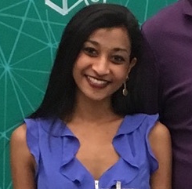

Team/About
Learn about the team!
Meet the Git-Gang!

Emmit Parubrub
My name is Emmit Kamakaniʻoluʻoluʻokoʻolau Kahaʻulelio Parubrub and I am a student at the University of San Francisco
majoring in Computer Science. I was born on the island of Oahu, Hawaiʻi and raised in Kahaluʻu. I love being in the ocean,
the mountains, or the gym but I have always been fascinated with technology. When I was a child my environment was very
rural and filled with nature so when I would see new technology I would be interested and intrigued by how it worked.
I am majoring in computer science to foster child-like fascination and passion for technology.
Github
•
LinkedIn

Olivia Kumar
Hey everybody, what's good? My name is Olivia and I am a Computer Science major at the University of San Francisco. Some of my hobbies include singing as well as playing the guitar, piano, and trumpet. I also enjoy investing and following the stock market. My sense of humor invovles sarcasm, puns, and dad jokes. A passion of mine is traveling and I intend to travel to 50% of the world before turning 50. Here's hoping I make it out of my student loan debt one day!
Github
•
LinkedIn

Darianne Lopez
Hi! I'm Darianne and I'm a senior data science major at the University of San Francisco. I'm originally from El Paso, Texas but came to SF to get my undergrad. I really enjoy going to the parks, beaches, and trying out new restaurants whenever I'm not deep in analyzing some data. I really hope to be a data scientist someday and gain new experiences working in different cities across the country.
Github
•
LinkedIn